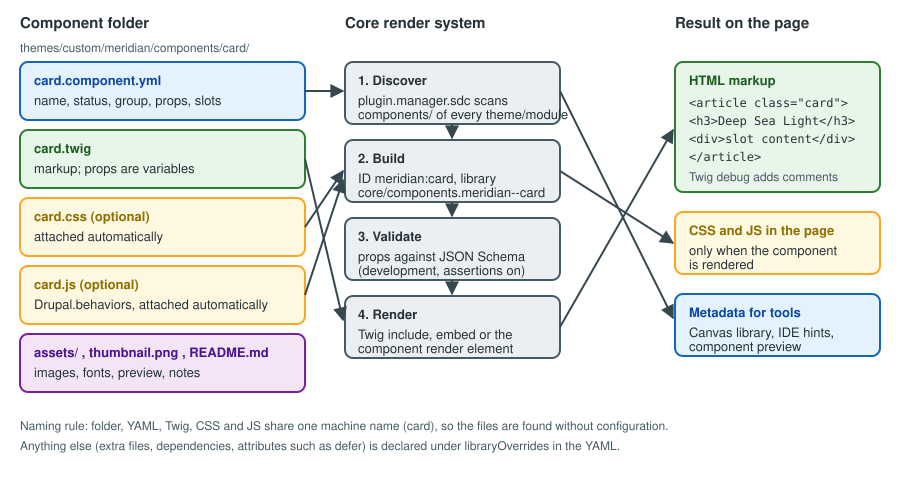

Single Directory Components
|
This content was generated with the assistance of AI and should be verified against the official documentation before being relied on in production. |
A Single Directory Component (SDC) is a piece of user interface whose markup, styling, behaviour and description live in one folder: a Twig template, an optional CSS file, an optional JavaScript file, optional assets and a YAML file that declares what the component accepts. Drupal discovers the folder, builds a plugin definition and a CSS/JavaScript library for it, checks the data passed in against the declared schema and renders the Twig template. Components are the unit that a theme publishes to its templates, that a module publishes to other modules, and that Canvas offers to editors in its component library.
This page was checked against the official documentation and the Drupal 11.x source on 2026-10-30. It is written
against Drupal 11.4.x, Drush 13 or 14 and PHP 8.3 or later (see
Requirements and hosting for the baseline). The examples use the
fictitious Meridian Museum site from the sub-section index and build three components for its
meridian theme: card, hero and exhibition-teaser. Drupal 10 reaches end of life on 2026-12-09, so new sites should
start on Drupal 11. Drupal 12.0.0 is planned for the week of 2026-12-07 and is not yet released; SDC is part of core in
Drupal 12 as well, and the Drupal 12 notes below describe scheduled changes that should be re-checked at the final
release.
Who uses components, and why
-
The themer writes components in the theme’s
components/folder and uses them from node, block and field templates. -
The module developer ships components in a module’s
components/folder, so that every theme can render the module’s output, and builds render arrays with thecomponentelement. -
The site builder or editor meets components only through Canvas, where each component with a valid schema becomes a draggable item with generated property forms.
-
The front-end team and designers use the YAML file as the contract between design and implementation: prop names, types, allowed values and slots are written down in one place.
Before SDC, one design element was scattered across THEME.libraries.yml (assets), a templates/ folder (markup), a
css/ folder, a js/ folder and a preprocess function (data shaping). A component keeps all of this together, loads its
CSS and JavaScript only on pages where it is rendered, and fails loudly in development when it is called with the wrong
data.
Version history
-
Drupal 10.1 shipped SDC as an experimental module named
sdcin core. -
Drupal 10.3 made SDC part of the core render system. There is no
sdcmodule to enable; on 10.3 and later the official guide states that components work out of the box, and on 10.2 and earlier the module had to be enabled by hand. -
Drupal 11.2 is the first release for which the official guide documents the variants key for the
componentrender element, and Drupal 11.3 is the first for which it documents#attributeson that element. -
Drupal 11.4 is current; the component API (the ID format, the
plugin.manager.sdcservice and the component render element) is documented as stable public API, while the JSON file that validates metadata is internal. -
Drupal 12 keeps SDC. It removes Claro, Olivero and Stable 9 from core, so a theme whose components extend a library of one of those themes has to be reviewed (see Preparing for Drupal 12).
Older books and tutorials describe a different situation. Modernizing Drupal 10 Theme Development (2023) and
Drupal 10 Masterclass (2023) target Drupal 10.0 and 10.1, where SDC was an experimental module: they tell the reader to
enable sdc, refer to library names that begin with sdc/, and point the $schema key at a path under
core/modules/sdc. In current Drupal there is no module to enable, the generated libraries are named
core/components.<provider>--<component> and the schema lives under core/assets/schemas/v1/. The experimental label
also disappeared: SDC is the recommended way to build reusable theme output.
Anatomy of a component

Where components live
Components are found in a folder named components at the top of any installed theme or module. Sub-folders are allowed
for organisation (components/atoms/button/). The provider is the machine name of the extension that owns the folder,
and the component ID is provider:component, for example meridian:card. The ID is public API: Twig and PHP code
refer to a component only by it.
themes/custom/meridian/
meridian.info.yml
meridian.libraries.yml
components/
card/
card.component.yml # metadata: required
card.twig # markup: required, must end in .twig, not .html.twig
card.css # attached automatically when the component renders
card.js # attached automatically when the component renders
thumbnail.png # preview used by tools such as Canvas
README.md # documentation for other developers
assets/
placeholder.svg
hero/
hero.component.yml
hero.twig
hero.css
exhibition-teaser/
exhibition-teaser.component.yml
exhibition-teaser.twig
exhibition-teaser.css
modules/custom/meridian_collection/
components/
object-label/
object-label.component.yml
object-label.twigThe rules that make this layout work:
-
The component’s machine name is the name of its YAML file without
.component.yml. By convention the folder, the YAML file, the Twig file, the CSS file and the JavaScript file all share that name. A CSS or JavaScript file with the same name is attached with no configuration; anything else must be listed underlibraryOverrides. -
The Twig file extension is
.twig. Naming itcard.html.twigis a frequent mistake and the template is then not found. -
A folder with a YAML file but a name that does not match the Twig file produces a "template not found" error at render time rather than at discovery.
-
Names with a hyphen (
exhibition-teaser) are fine for the component; prop names and slot names become Twig variables and so follow variable rules (see Slots).
What core does with the folder
Core defines the service plugin.manager.sdc, implemented by Drupal\Core\Theme\ComponentPluginManager. It
scans every enabled theme and module for *.component.yml files, caches the resulting definitions in the
component_plugins cache bin and, for each component:
-
creates a plugin definition (ID, label, group, status, schema, slots, variants) from the metadata
-
generates an anonymous library whose name is
core/components.provider--component, containing the same-named CSS and JavaScript plus whateverlibraryOverridesadds, and makescore/drupala dependency when overrides are present -
registers a Twig node visitor that attaches the library each time the component is rendered
-
checks, at definition time, that props and slots do not share a name, and, once
replacesis in play, that a replacing component has a compatible schema
The plugin manager deliberately has no alter hook for component definitions: everything about a component has to be in
its directory, and the supported way of changing another extension’s component is the replaces key. A cache rebuild
(ddev drush cr) is needed after adding a component or changing its YAML, because definitions are cached.
The component.yml file
The metadata file is YAML. Editors that understand JSON Schema complete and validate its keys when the file starts with
the $schema line. The path used by current core is under core/assets/schemas/v1/ (older material shows a path under
core/modules/sdc); the key is a hint for editors and does not affect rendering.
# themes/custom/meridian/components/card/card.component.yml
$schema: https://git.drupalcode.org/project/drupal/-/raw/HEAD/core/assets/schemas/v1/metadata.schema.json
name: Card
description: A framed block with optional media, a heading that can link, body text and actions.
status: stable
group: Meridian
props:
type: object
required:
- title
properties:
title:
type: string
title: Title
examples:
- Deep Sea Light
eyebrow:
type: string
title: Eyebrow
description: Short label above the title, such as a gallery name.
url:
type: string
format: uri-reference
title: Link
description: Where the title links to. Leave empty for a card that is not a link.
heading_level:
type: integer
title: Heading level
enum: [2, 3, 4]
default: 3
slots:
media:
title: Media
description: An image or video shown above the content.
body:
title: Body
actions:
title: Actions
description: Buttons or links placed at the bottom.
libraryOverrides:
dependencies:
- core/onceSource: Annotated example component.yml
The keys
| Key | Meaning |
|---|---|
|
URL of the JSON Schema that describes the file itself. Optional; used by editors. |
|
Human-readable name. When it is missing, core derives one from the machine name. Canvas and other tools show it. |
|
Human-readable summary, shown in tools. |
|
One of |
|
A label used to group components in listings; Canvas shows it as a section of its library. A component without one is listed under a default "All Components" or "Other" group depending on the tool. |
|
Boolean. When |
|
A JSON Schema object that describes the data the component accepts (see Props). |
|
Named regions for free-form content (see Slots). |
|
Named presentational variations (see Variants). |
|
Free labels for tooling. |
|
Replaces or extends parts of the generated library (see libraryOverrides). |
|
|
|
Free-form settings that other modules read, keyed by module name. |
Two details are worth stating plainly. First, the schema file shipped in core describes $schema, name, description,
status, noUi, props, slots, variants, tags, libraryOverrides and thirdPartySettings; group and
replaces are not listed in it but are read by the plugin manager, which is why a strict editor may underline them. The
official guide marks the schema file as internal, not as a contract. Second, the status of a component is advice to
people and tools, not a switch: core still renders a component marked obsolete.
Props
Props are strictly typed data. They are declared in the props key as a standard JSON Schema object and become Twig
variables of the same name inside the component’s template.
props:
type: object
required:
- heading
properties:
heading:
type: string
count:
type: integer
minimum: 0
featured:
type: boolean
layout:
type: string
enum: [stacked, side-by-side]
meta:enum:
stacked: Stacked
side-by-side: Side by side
image:
type: object
properties:
src:
type: string
alt:
type: string
required: [src, alt]Source: Annotated example component.yml
What to know about props:
-
Types. JSON Schema types map to PHP values:
string,number,integer,boolean,null,object(an associative array) andarray(a list). A prop can declareenum,title,description,examples,defaultand the usual JSON Schema constraints. Core also understandsmeta:enum(labels for the values of anenum, used by tools) andx-translation-context. -
Additional properties are not allowed. Core forces
additionalProperties: falseon the props object, and rejects a schema that sets it totrue. Passing a prop that is not declared is therefore an error when validation is on. -
The key must be present. The official guide says that
propshas to be present even for a component with none, and shows an object schema withadditionalProperties: falseand no properties. In the source, a missingpropskey is an error for components that live in modules, and for components of a theme only when that theme setsenforce_prop_schemas: truein its.info.yml. Write the key in every component; Canvas also requires it. -
defaultis documentation, not a runtime default. Twig variables are not filled in from the schema. Use{{ heading_level|default(3) }}in the template. -
Required props need examples for Canvas. A required prop without
examplesmakes the component unusable in Canvas (see Canvas and visual page building). -
Props are data, not markup. Pass strings, numbers, booleans and small structures. Markup belongs in slots.
-
The
attributesvariable is used in the template without being declared as a prop; it is anAttributeobject and is covered in The attributes variable.
To make the schema mandatory for every component of a theme, set the key in the theme’s info file.
# themes/custom/meridian/meridian.info.yml
name: Meridian
type: theme
base theme: false
description: Theme of the Meridian Museum site, built from the Starterkit.
core_version_requirement: ^11.3
enforce_prop_schemas: true
libraries:
- meridian/global
regions:
header: Header
content: Content
footer: FooterSlots
Slots are areas for free-form content: render arrays, other components, Twig blocks or plain HTML. Because their
content has no fixed structure, they are not checked against a schema; the template can only test whether a slot is empty.
A slot is declared by name, and can have a title and description:
slots:
media:
title: Media
body: {}Rules for slots:
-
A slot name and a prop name must not be equal; core reports the collision when it loads the definition.
-
Slot names follow the pattern of a Twig variable (letters, digits and underscores, not starting with a digit), so a slot cannot be called
card-body. -
Inside the template a slot is a variable, printed with
{{ body }}. Wrap it in a{% block body %}to let callers fill it with{% embed %}(see Filling slots with embed). -
The
slotsschema allows the optional keysexamples,expected,minItemsandmaxItems, which Canvas reads to decide what can be dropped into the slot.
Variants
A variant is a named alternative presentation, for example the compact and default versions of a hero. Declare them
under variants; each needs a title.
variants:
default:
title: Default
compact:
title: Compact
description: Shorter banner for inner pages.The chosen variant reaches the template as the variable variant. Core adds it to the props when a render array carries
one, and when Twig debugging is on the generated HTML comment names the variant that was used. Variant names may contain
dashes and underscores. Use variants for what changes appearance only; if the data changes, use props.
libraryOverrides
The generated library contains the same-named CSS and JavaScript. libraryOverrides accepts the keys of a normal library
entry (css, js, dependencies, header, and so on), with paths relative to the component folder. The merge is
shallow: if you set a key, you replace everything core generated under that key, so list the component’s own file as well.
# themes/custom/meridian/components/hero/hero.component.yml (excerpt)
libraryOverrides:
dependencies:
- core/once
- core/drupalSettings
css:
component:
hero.css: {}
assets/hero-print.css: { media: print }
js:
hero.js: { attributes: { defer: true } }Source: Annotated example component.yml
Notes:
-
When
libraryOverridesis present, core appendscore/drupalto the dependencies, so JavaScript behaviours are attached. When it is absent, a JavaScript file that usesDrupal.behaviorsoronce()still works only if those libraries are on the page for another reason; declarecore/onceandcore/drupalexplicitly. -
External files (URLs) are left as written; local files are rewritten relative to the library root.
-
CSS goes under the SMACSS categories
base,layout,component,stateandtheme, as in Libraries and assets. -
Assets that several components share (resets, typography, design tokens) still belong to a theme library listed in the
.info.yml; only the component’s own parts belong in the component.
Replacing a component of another extension
A theme can take over a component provided by a module or by another theme with the replaces key. The value is the ID of
the component being replaced.
# themes/custom/meridian/components/object-label/object-label.component.yml
$schema: https://git.drupalcode.org/project/drupal/-/raw/HEAD/core/assets/schemas/v1/metadata.schema.json
name: Object label
status: stable
replaces: 'meridian_collection:object-label'
props:
type: object
properties:
accession_number:
type: string
title:
type: string
slots: {}The conditions are strict:
-
Only a theme can replace a component; a module cannot.
-
Both components need a props schema, and the schemas must be compatible: the replacement has to accept what the original accepts, and its slots must match. Core checks this when it builds the definitions and fails with a message that names both components when it does not hold.
-
Everything that calls
meridian_collection:object-labelnow renders the theme’s version when the replacing theme is active, with no change in the caller. That makesreplacesthe right tool for per-theme customisation of a module’s output, in place of an alter hook (the component plugin manager has none). -
Replacement is resolved per request from the active theme; a replacing component in a theme that is installed but not active is ignored.
Rendering a component
There are three ways to render a component. All of them refer to it by provider:component.
Twig include
Use include() when the component needs data only, or when its slots are printed from Twig variables. Pass
with_context = false so the caller’s variables do not leak in:
{# themes/custom/meridian/templates/content/node--exhibition--teaser.html.twig #}
{% set dates = node.field_dates.value|date('j M Y') ~ ' to ' ~ node.field_dates.end_value|date('j M Y') %}
{{ include('meridian:exhibition-teaser', {
title: label,
link: url,
kicker: 'Now open',
dates: dates,
}, with_context = false) }}In node templates, slot data usually comes from content (rendered fields) and prop data from node (raw field values).
Shape anything more complex than this in a preprocess function (see
Template suggestions and preprocess).
Filling slots with embed
Use {% embed %} when a slot is a block of Twig. The embedded component must wrap the slot in {% block name %} in its
own template. only keeps the caller’s variables out of the component; without it the component sees the whole
context, and with it every value used inside a block has to be passed in explicitly.
{% embed 'meridian:card' with { title: label, url: url, eyebrow: 'Collection' } only %}
{% block body %}
<p>{{ summary }}</p>
{% endblock %}
{% block actions %}
<a class="button" href="{{ url }}">View object</a>
{% endblock %}
{% endembed %}In the example, summary and url work inside the blocks only if they were handed to the embed (url is, summary is
not); with only an undefined variable renders as nothing, which is a classic way to lose content silently. Add
summary to the with hash.
The component render element
Modules, controllers, blocks and preprocess functions build render arrays, and a component is one more render element:
'#type' => 'component'. #component is required; #props and #slots are optional.
<?php
namespace Drupal\meridian_collection\Controller;
use Drupal\Core\Controller\ControllerBase;
/**
* Landing page for the exhibitions section.
*/
final class ExhibitionsLandingController extends ControllerBase {
/**
* Builds the page.
*/
public function __invoke(): array {
return [
'hero' => [
'#type' => 'component',
'#component' => 'meridian:hero',
'#variant' => 'compact',
'#props' => [
'heading' => $this->t('Exhibitions'),
'subheading' => $this->t('What is on at the Meridian Museum'),
'image' => [
'src' => '/themes/custom/meridian/images/exhibitions-hero.jpg',
'alt' => $this->t('Visitors in the main hall'),
],
],
'#slots' => [
'actions' => [
'#type' => 'link',
'#title' => $this->t('Plan your visit'),
'#url' => \Drupal\Core\Url::fromRoute('entity.node.canonical', ['node' => 1]),
],
],
],
];
}
}Points about the element:
-
Slot values must be render arrays or scalars. Anything else raises an exception whose message names the component and the slot. Child elements whose key is a slot name are also treated as slots.
-
Variants. The element reads the variant from the render array and passes it to the template as the prop
variant. The official guide lists the variants key as available from Drupal 11.2, and the 11.x element documents the property as#variant; check the property name against the version you run. -
Attributes. The universal
#attributesproperty is merged into theattributesvariable of the component; the official guide lists this from Drupal 11.3. When both#attributesand#props['attributes']are given, the values from the props win. -
Callbacks.
#propsAlterand#slotsAltertake trusted callbacks (seeTrustedCallbackInterface) that run before the component renders, for example to replace tokens in props. -
Caching. Cache metadata of render arrays placed in slots bubbles up as usual (see Performance and caching); data passed through props must carry its own cache tags if it depends on entities.
The service plugin.manager.sdc can also be used directly (find('meridian:card'), getAllComponents()), for example to
build a style guide page that lists all components with their metadata.
The attributes variable
Components use an attributes variable, an Attribute object. Printing it on the root element lets callers add
classes, IDs and data attributes without the component knowing:
<div{{ attributes.addClass('alert').setAttribute('role', 'alert') }}>
{% block message %}{{ message }}{% endblock %}
</div>The official example prints attributes without declaring it as a prop. From Twig, pass attributes as a variable of that name (an Attribute object). Always keep
attributes on one element only; printing it twice duplicates IDs.
Building the Meridian components
The Meridian theme needs a card for objects and news, a hero for the top of landing pages, and a teaser for exhibitions that is built from the card. The three files of each component follow.
card
The card.component.yml shown earlier declares the props title, eyebrow, url and heading_level and the slots
media, body and actions. The template:
{# themes/custom/meridian/components/card/card.twig #}
{% set heading_tag = 'h' ~ (heading_level|default(3)) %}
<article{{ attributes.addClass('card') }}>
<div class="card__media">{% block media %}{{ media }}{% endblock %}</div>
<div class="card__content">
{% if eyebrow %}
<p class="card__eyebrow">{{ eyebrow }}</p>
{% endif %}
<{{ heading_tag }} class="card__title">
{% if url %}
<a class="card__link" href="{{ url }}">{{ title }}</a>
{% else %}
{{ title }}
{% endif %}
</{{ heading_tag }}>
<div class="card__body">{% block body %}{{ body }}{% endblock %}</div>
<div class="card__actions">{% block actions %}{{ actions }}{% endblock %}</div>
</div>
</article>/* themes/custom/meridian/components/card/card.css */
.card {
display: flex;
flex-direction: column;
border: 1px solid var(--meridian-border, #c9d1d9);
border-radius: 0.5rem;
background: var(--meridian-surface, #ffffff);
}
.card__content { padding: 1rem; }
.card__eyebrow {
margin: 0 0 0.25rem;
font-size: 0.75rem;
letter-spacing: 0.08em;
text-transform: uppercase;
}
.card__title { margin: 0 0 0.5rem; }
.card__link:focus-visible { outline: 3px solid currentColor; outline-offset: 2px; }// themes/custom/meridian/components/card/card.js
((Drupal, once) => {
Drupal.behaviors.meridianCard = {
attach(context) {
// Make the whole card clickable without nesting links.
once('meridian-card', '.card', context).forEach((card) => {
const link = card.querySelector('.card__link');
if (!link) {
return;
}
card.addEventListener('click', (event) => {
if (!event.target.closest('a, button')) {
link.click();
}
});
});
},
};
})(Drupal, once);Design choices in the template: each slot is wrapped in a block that sits outside any if, because a block inside a
false condition is never rendered and an embed that fills it would silently produce nothing. Empty wrappers are
acceptable in the markup; if they affect layout, hide them with :empty in CSS. The behaviour uses once() with a
context, so it runs once per card even when Ajax or Canvas inserts cards later (see
Libraries and assets).
hero
# themes/custom/meridian/components/hero/hero.component.yml
$schema: https://git.drupalcode.org/project/drupal/-/raw/HEAD/core/assets/schemas/v1/metadata.schema.json
name: Hero
description: Large banner with an image, a heading and optional actions.
status: stable
group: Meridian
props:
type: object
required:
- heading
- image
properties:
heading:
type: string
title: Heading
examples:
- Welcome to the Meridian Museum
subheading:
type: string
title: Subheading
image:
type: object
title: Image
required: [src, alt]
properties:
src:
type: string
title: Image URL
alt:
type: string
title: Alternative text
examples:
- src: /themes/custom/meridian/images/hero.jpg
alt: Visitors in the main hall
variants:
default:
title: Default
compact:
title: Compact
slots:
actions:
title: Actions
libraryOverrides:
dependencies:
- core/once{# themes/custom/meridian/components/hero/hero.twig #}
{% set variant = variant|default('default') %}
<section{{ attributes.addClass('hero', 'hero--' ~ variant) }}>
<img class="hero__image" src="{{ image.src }}" alt="{{ image.alt }}" loading="eager" fetchpriority="high">
<div class="hero__content">
<h1 class="hero__heading">{{ heading }}</h1>
{% if subheading %}
<p class="hero__subheading">{{ subheading }}</p>
{% endif %}
<div class="hero__actions">{% block actions %}{{ actions }}{% endblock %}</div>
</div>
</section>Source: Annotated example component.yml
The image prop is an object with a mandatory alt, which makes it impossible to call the hero with an image and no
text alternative when validation is on. If the image is decorative, add a boolean prop decorative and print
alt="". Use a responsive image style for real photos (see
Breakpoints and responsive images) and keep only one h1 per
page.
exhibition-teaser
The teaser composes the card: a component can include or embed other components, and the library of each one is attached when it renders.
# themes/custom/meridian/components/exhibition-teaser/exhibition-teaser.component.yml
$schema: https://git.drupalcode.org/project/drupal/-/raw/HEAD/core/assets/schemas/v1/metadata.schema.json
name: Exhibition teaser
description: A card announcing an exhibition with its dates and a link.
status: stable
group: Meridian
props:
type: object
required:
- title
- link
properties:
title:
type: string
title: Title
examples:
- Deep Sea Light
kicker:
type: string
title: Kicker
examples:
- Now open
dates:
type: string
title: Dates
examples:
- 12 March to 30 June
link:
type: string
format: uri-reference
title: Link
examples:
- /exhibitions/deep-sea-light
slots:
media:
title: Image
actions:
title: Actions{# themes/custom/meridian/components/exhibition-teaser/exhibition-teaser.twig #}
{% embed 'meridian:card' with {
title: title,
eyebrow: kicker,
url: link,
heading_level: 3,
attributes: attributes.addClass('exhibition-teaser'),
media: media,
actions: actions,
dates: dates,
} only %}
{% block body %}
{% if dates %}<p class="exhibition-teaser__dates">{{ dates }}</p>{% endif %}
{% endblock %}
{% endembed %}Because the teaser embeds the card with only, everything the card needs (media, actions, dates and the extra
class) is passed explicitly. The teaser is the component that
Canvas lists in its library for the Meridian site; the examples on the
required props are what Canvas uses to preview it.
Validation
Core validates twice, and both checks are intended for development.
-
The definition (the YAML file) is checked when components are loaded: props and slots must not share names, the props object must be of type
object, additional properties must not be allowed, and replacements must be compatible. -
The data (the props passed at render time) is checked against the schema.
The official guide describes validation as a development aid. To switch it on in a local environment:
ddev composer require --dev drupal/core-dev<?php
// web/sites/default/settings.local.php (local development only)
ini_set('zend.assertions', 1);
ini_set('assert.exception', 1);drupal/core-dev brings in the JSON Schema validator library that core uses when it is available. With assertions on, a
wrong prop type, a missing required prop or an undeclared prop throws an InvalidComponentException that names the
component and the failing property, instead of rendering a broken or empty element. In production leave both settings off
(the recommended production value of zend.assertions is -1) so that a bad value cannot take a page down, and
treat the schema as development-time documentation. The theme key enforce_prop_schemas makes the presence of a schema
mandatory for a theme; it does not turn runtime validation on.
Component libraries
A component library is a set of components shared by several sites or themes. There are three ways to organise one:
-
In a base or starter theme. The theme owns generic components (
button,card,hero) and sub-themes inherit them: components of a base theme are discovered even when a sub-theme is active (see Starterkit and subthemes). -
In a module. A module such as
meridian_components, ormeridian_collectionfor its own output, ships components that work with any theme. The schema is mandatory here, which makes module components safer to reuse. -
In a distribution or site template. Drupal CMS pairs Canvas with a theme that carries components; a project can follow the same pattern (see Drupal CMS and site templates).
Any project can then customise a library without forking it: a theme replaces a module’s or a base theme’s component with
replaces, and passes extra classes through attributes. For previews outside Drupal, community tooling renders
components in a Storybook-like gallery. Older books (Modernizing Drupal 10 Theme Development) show Storybook with
Twig.js; that renders templates outside Drupal, so Drupal-specific Twig functions and the provider:component IDs need
stand-ins. Check the current state of the community tools before choosing one, and see
Front-end tooling for build tooling.
Components in Canvas
Canvas treats SDCs as one of its component sources. A component appears in the library when it is enabled and valid under
Canvas’s rules: props present, every required prop has examples, and slots declared. The group decides the section of
the library, name the label and noUi: true hides the component. Canvas builds the property form of each component from
the prop schemas, using title, enum and meta:enum for labels. An SDC needs no change to work in Canvas, which is the reason to write
components this way from the start. The details, including the troubleshooting list for a component that does not show up,
are in Canvas and visual page building.
Layout Builder, the other page builder, can place components too, but only through blocks or field formatters that render them. Layout Builder stays in core; see Layout Builder.
Security
-
Autoescaping. Twig escapes every
{{ }}output. A string prop is safe by default. Do not add|rawto a prop or slot that can hold user input; a slot filled from a render array already carries sanitised markup. -
URLs. Autoescaping does not remove dangerous URL schemes, so a prop printed in
hreforsrccan still carryjavascript:. Build links withUrlobjects or run user-supplied URLs throughUrlHelper::stripDangerousProtocols()in preprocess code before passing them as props. The schemaformat: uri-referenceis documentation, not a filter. -
Attributes. The
Attributeobject escapes attribute names and values; building attributes with string concatenation loses this. -
Third-party code. A component’s JavaScript is code that runs on the page: review components taken from other projects as you would review a module.
-
Secrets. Props reach the page as HTML. Never pass tokens, keys or internal URLs through a component.
Common errors and pitfalls
| Symptom | Cause and fix |
|---|---|
|
The cache has not been rebuilt, the folder is not named |
The template is not found |
The file is named |
CSS or JavaScript is not loaded |
The file name differs from the component name, or |
An invalid component exception about additional properties |
A prop that is not declared in the schema was passed; declare it or stop passing it. A schema that allows additional properties is itself rejected. |
A required prop is "missing" on a node teaser |
The Twig |
The slot is empty when filled with |
The component printed the slot inside an |
The component does not appear in Canvas |
|
|
A module tried to replace a component (only themes can), the replacing theme is not active, or the schemas are incompatible. |
Duplicated IDs or classes |
|
The old |
Tutorials for Drupal 10.1 and 10.2 enable it. On 10.3 and later there is no such module; remove the dependency. |
Checklist
-
One folder per component with a matching YAML file and Twig file; the Twig file ends in
.twig. -
propsalways present, typed, withexampleson required props; no markup in props. -
Slots wrapped in blocks outside any condition, so
embedworks. -
attributesprinted once, on the root element. -
CSS and JavaScript named after the component; shared assets in a theme library; behaviours use
once(). -
status,groupandthumbnail.pngset for components that editors see. -
Validation enabled locally with
drupal/core-devand assertions; off in production. -
Cache rebuilt after every metadata change.